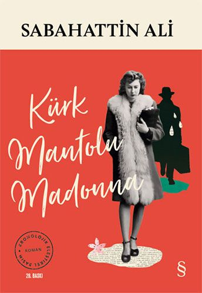
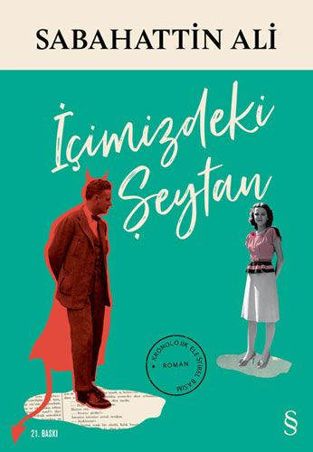
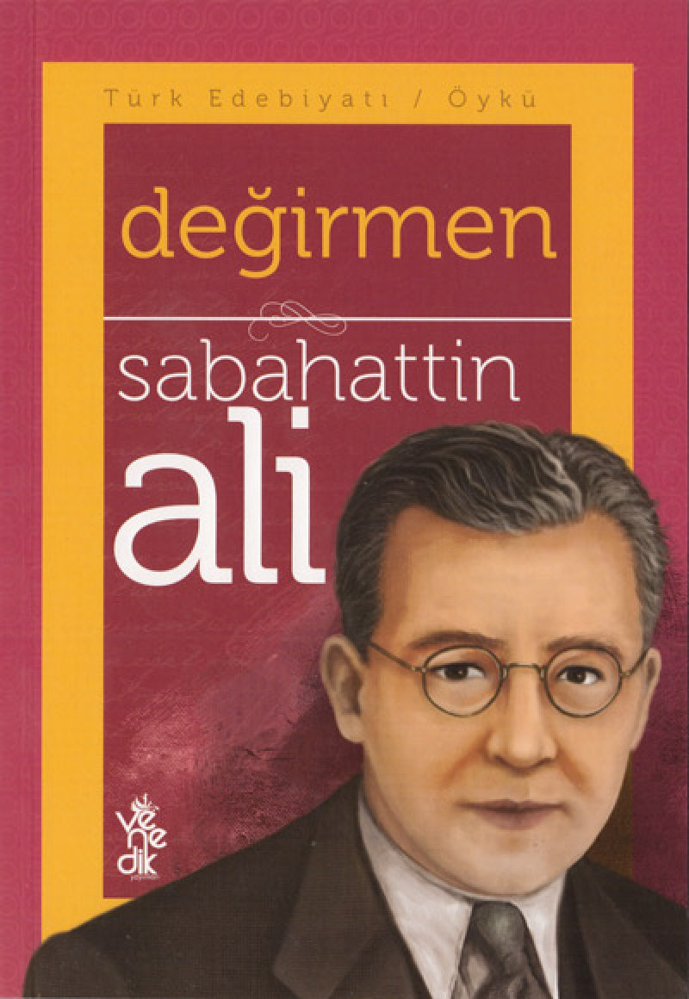
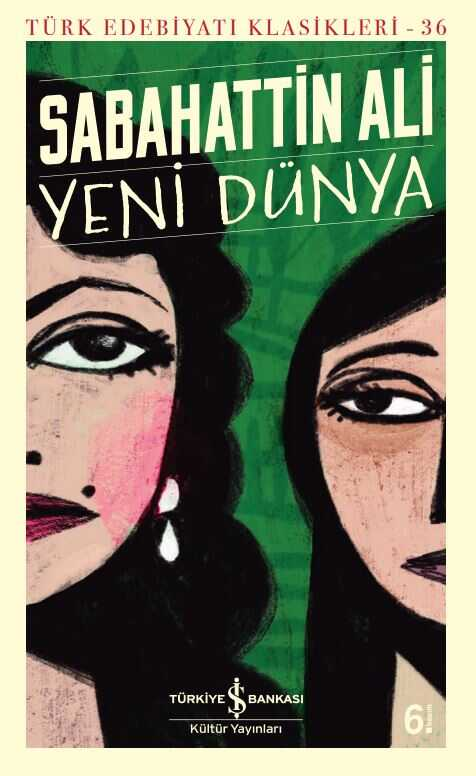

“Beni en çok yoran şey, kendimden hiç kaçamayışım oldu.”
Sabahattin Ali, Türk edebiyatının en içten ve en sarsıcı kalemlerinden biridir. Onun yazdıkları, sadece kelimelerden ibaret değil; her satırda bir yalnızlık, bir direniş, bir insan hikâyesi gizlidir. Bu sayfa, onun eserlerine ve hayatına kendi bakış açımızla bir selamdır.
Info
Sabahattin Ali, 25 Şubat 1907’de Edirne’de doğmuş, Türk edebiyatının en etkileyici ve unutulmaz yazarlarından biridir. Toplumcu gerçekçi bir bakış açısıyla kaleme aldığı öykü ve romanları, sıradan insanların iç dünyasını, toplumsal adaletsizlikleri ve bireyin yalnızlığını derin bir duyarlılıkla yansıtır. 41 yaşında, 1948 yılında henüz genç bir yaştayken hayatını kaybederek edebiyatımızdan çok erken ayrılmıştır.
Eğitim ve Hayatı
İlk ve orta öğrenimini farklı şehirlerde tamamlayan Sabahattin Ali, İstanbul Öğretmen Okulu'ndan mezun olduktan sonra Almanya’ya giderek eğitimine devam etti. Yurda döndükten sonra öğretmenlik yaptı, çeşitli dergilerde yazılar yazdı ve devlet görevlerinde bulundu. Hayatı boyunca düşünceleri, yazdıkları ve duruşu nedeniyle baskılara maruz kaldı; bu durum eserlerine de doğrudan yansıdı.
Edebiyattaki Önemi
Sabahattin Ali’nin edebi gücü, sade ama etkileyici dili ve karakterlerinin içsel çatışmalarını ustaca yansıtmasında yatar. "Kürk Mantolu Madonna", "İçimizdeki Şeytan" ve "Kuyucaklı Yusuf" gibi eserleriyle bireyin yalnızlığı, aşk, özgürlük ve adalet gibi temaları işler. Toplumsal gerçekçiliğin öncülerinden olan yazar, Türk edebiyatında iz bırakan bir ses olmayı başarmıştır.
Books

Kürk Mantolu Madonna
1943 – Aşk, yalnızlık ve içsel çözümlemelerle dolu etkileyici bir roman.

İçimizdeki Şeytan
1940 – İnsan karakterinin zayıflıkları üzerine düşündüren bir eser.

Kuyucaklı Yusuf
1937 – Anadolu'nun taşrasında geçen, güçlü bir karakter analizi.

Değirmen
1935 – Sabahattin Ali’nin ilk öykü kitabıdır. Toplumcu gerçekçi yazarlığa geçişinin izlerini taşır

Yeni Dünya
1943 – Anadolu insanının yaşamı, yoksulluk ve toplumsal eşitsizlik temalarını işler.

Sırça Köşk
1947 (ölümünden sonra yayımlandı) – Masalsı bir dille yazılmış bu öykü, aşkın büyüsünü ve zamanla kurulan bağları sade ama derin bir anlatımla işler